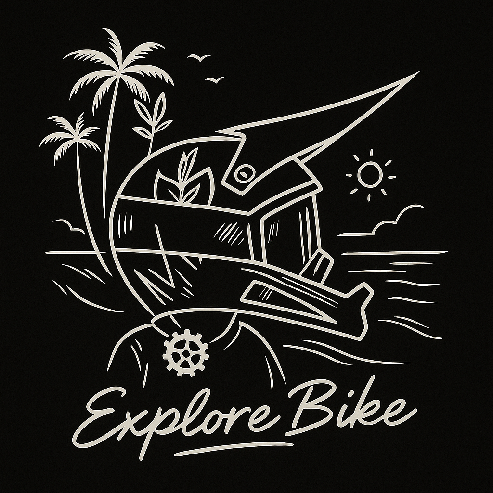

Archive 001
Where it
started.
A place for the graphics, artwork, and projects connected to the brand's roots in bicycle culture.
Keep the roots.
Leave room to grow.
Helmets, palms, bicycles, and the words Freedom Explore are part of our visual starting point. This archive keeps those connections visible as the brand follows new interests. The existing graphics below begin the collection; more work can find a home here over time.

01 / Archived graphic
Helmet & palms
A meeting of bicycle culture and an open coastal horizon, kept here as part of the brand's visual origins.
02 / Archived wordmark
Archived script wordmark
Two words that carry the idea forward: room to move, and the curiosity to see what comes next.